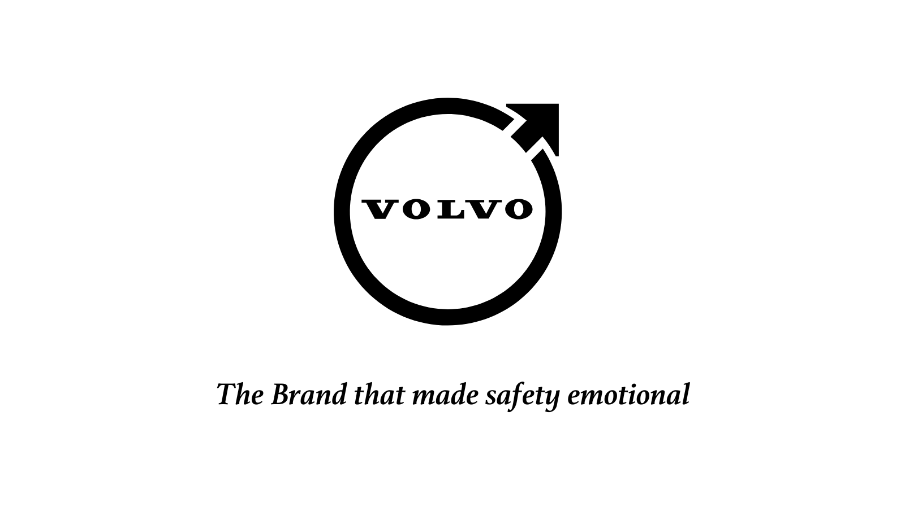
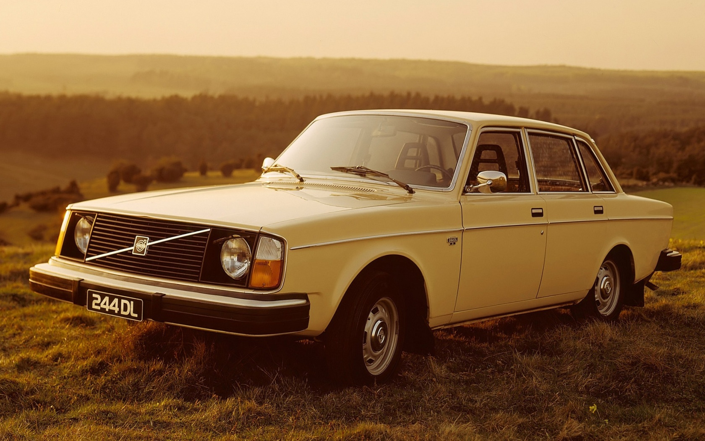
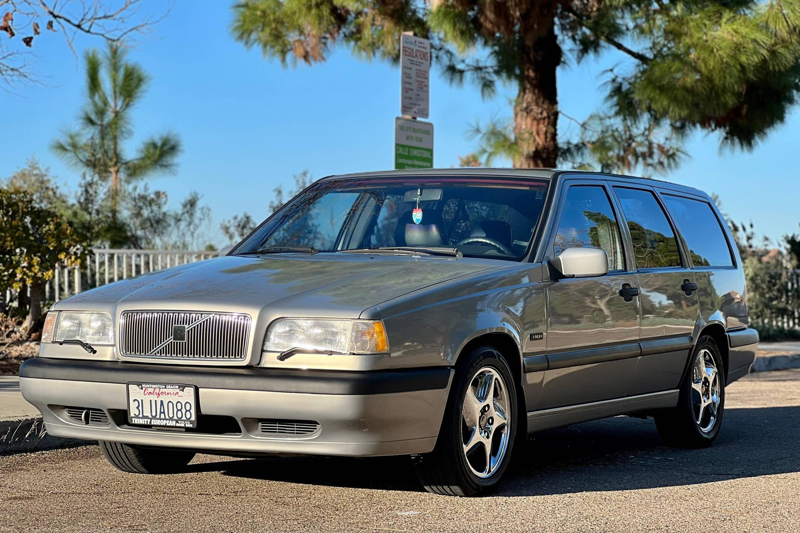
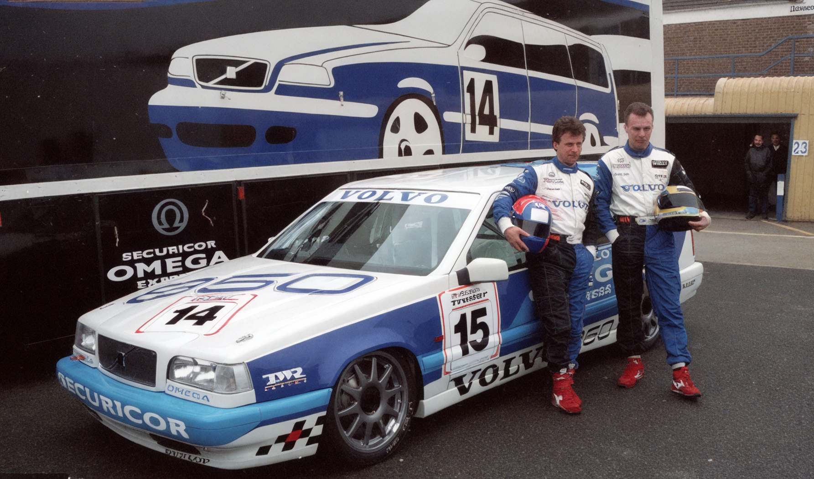
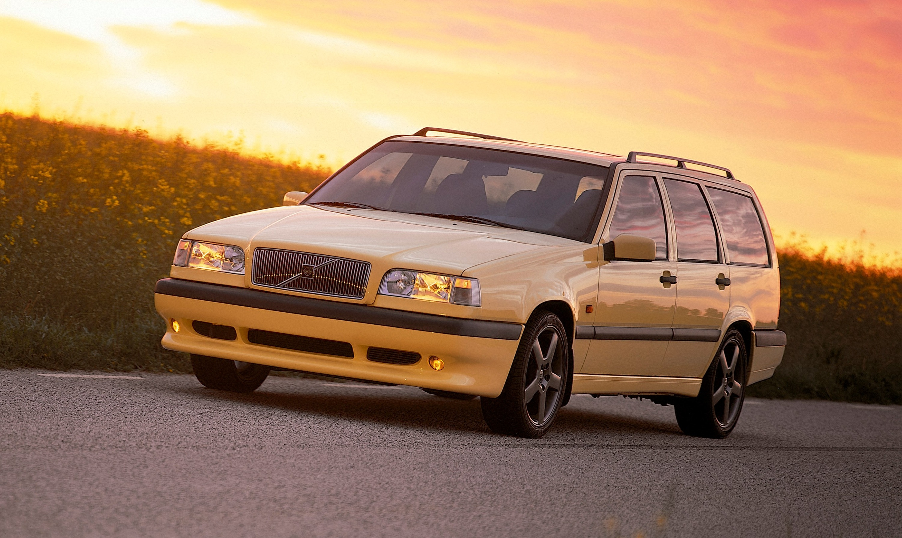

Evolution of Safety, Innovation, and Corporate Strategies of Volvo
Introduction: The Epistemology of Swedish Engineering and the Formation of a Global Automotive Paradox
The history of global car manufacturing is full of examples of corporations that built their image on speed, ostentatious luxury, mass accessibility, or aggressive design. In contrast, the Swedish company Volvo chose a unique, unprecedented, and seemingly paradoxical path, making the safety of human life, uncompromising engineering reliability, and absolute utility its ontological foundation. Since its founding in 1927, this brand has transformed from a small local manufacturer focused exclusively on creating vehicles for the harsh Scandinavian climate into a transnational giant whose patents, innovations, and corporate solutions have saved millions of lives worldwide. The evolution of Volvo is a testament to how a deep commitment to core values can become a powerful catalyst for commercial success, allowing the company to overcome economic crises, ownership changes, and global paradigm shifts.
Analyzing Volvo's historical path requires a comprehensive approach, as the company's development occurred across several parallel planes: the evolution of passive and active safety systems, radical design transformations from "boxy" shapes to streamlined silhouettes, the formation of global strategic alliances with competitors, and the creation of some of the most innovative and psychologically astute advertising campaigns in marketing history. This report offers a comprehensive overview of Volvo's history, starting from the brand's conceptualization by a ball-bearing manufacturer, through the era of global expansion, its famous motorsport participation using family estates, collaborations with giants like Porsche, Lotus, and Renault, to the modern stage of electrification and hydrogen fuel cell development under the umbrella of Geely and Volvo Group.
Special attention in this study is given to deep cause-and-effect relationships. It examines not only the timeline of the company's most iconic cars but also how specific engineering oddities (such as heartbeat sensors in the cabin or external pedestrian airbags) and creative advertising slogans of the 1990s and 2000s shaped public perception of the brand. This report demonstrates how the philosophy of "human-centricity" allowed the Swedish manufacturer to survive fierce competition, preserving its unique identity regardless of who held the controlling stake.
The Birth of a Legend: From Ball Bearings to the Automotive Industry (1915 - 1930s)
The historical roots of the Volvo brand lie deep in Sweden's metallurgical and mechanical engineering industry, renowned for its high-quality steel. In 1915, SKF (Svenska Kullagerfabriken), which was already a global leader in the design and production of ball and roller bearings, officially registered the "Volvo" trademark. The name itself is an ingeniously simple semantic and marketing solution. It derives from the Latin verb "volvere," meaning "to roll," conjugated in the first person singular—"I roll." Initially, SKF management planned to release a new series of ball bearings, bicycles, transmissions, and other transport equipment under this brand, but the outbreak of World War I forced the company to pivot to military needs, and the new brand was temporarily "frozen."

The revival of the idea to create a native Swedish car under the Volvo brand occurred only in 1926, thanks to the energy and synergy of two outstanding individuals: Assar Gabrielsson, who at the time worked as a sales manager at SKF (and had previously sold eggs), and Gustaf Larson, a talented mechanical engineer. Their shared vision was based on a deep analysis of the local market: imported cars (mostly American-made) were completely unsuited to Scandinavian realities. They quickly failed, broke down, and literally fell apart due to the terrible quality of Swedish roads and extreme winter temperatures. Gabrielsson and Larson realized that Sweden needed its own incredibly durable car that could meet the climate's challenges. Securing financial backing from SKF, they reactivated the Volvo brand and began production. Their corporate philosophy was built on absolute transparency and honesty from the very beginning. An early company motto, which hung in their shared office, read: "What you can't say to me so that everyone can hear, may as well be left unsaid." This culture of openness became the foundation for future innovations.


Release of the First Car and Formation of Symbolism
The historic moment arrived on the morning of April 14, 1927, when the company's first production car rolled out of the factory gates on the island of Hisingen (Gothenburg)—the Volvo ÖV 4 (Öppen Vagn 4 cylindrar), unofficially nicknamed "Jakob" by employees. This open four-cylinder phaeton was built on a sturdy ash and beech frame clad in sheet metal painted deep dark blue with black fenders. The car cost 4,800 Swedish kronor, making it a premium product for its time. However, the founders' first strategic and climatic miscalculation was releasing an open-top car in a country where cold and snow dominate most of the year. Because of this, Swedish consumers were in no rush to buy the novelty, and only 297 units were sold in the first year. The situation was quickly rectified with the introduction of the closed-body PV4 model, which cost 1,000 kronor more but guaranteed winter comfort.


Simultaneously with the release of the first car, the company's logo was approved, which spawned many myths. Contrary to the popular but entirely false stereotype that the logo is a symbol of masculinity or the male sex, it is actually the ancient alchemical and chemical symbol for iron—a circle with an arrow pointing diagonally upward and to the right. This ideogram, known as the "Iron Mark," was chosen deliberately to evoke associations with the centuries-old traditions of the Swedish metallurgical industry, the unbreakable strength of steel, and structural durability. The famous diagonal stripe on the radiator grille, which today is an integral design element of every Volvo car, initially had no aesthetic significance: it was purely a technical necessity to securely attach the heavy chrome logo to the radiator. Over the years, this engineering detail evolved into a powerful decorative brand symbol.

The World War II Era and the Birth of the Total Safety Paradigm (1940s - 1950s)
Sweden's political neutrality during World War II was a key factor in Volvo's survival and subsequent technological leap. While most European automakers (in Germany, France, Britain) suffered from bombings or were forced to completely convert their factories to military production, Volvo was able to continue civilian research, albeit facing material shortages. This period became a turning point in the brand's ideology: management decided that passenger safety should become the primary differentiator for their products in the post-war market.
The company launched a crash-testing program unprecedented for its time. Lacking modern computer simulations and high-speed cameras, Volvo engineers used massive mechanical pulley and winch systems to accelerate cars and crash them at high speeds into concrete blocks or metal barriers. These rigorous empirical tests revealed the critical structural vulnerabilities of cars of that era and led to the development of solutions that put them decades ahead of the global industry.
The result of this intensive research was the presentation of the Volvo PV444 model in Stockholm in 1944, nicknamed the "Little Volvo." This compact car revolutionized both production efficiency and approaches to protecting the human body during accidents. Several epoch-making innovations were implemented in the PV444:
Unibody Construction:
The PV444 became the company's first car to abandon the traditional, heavy ladder frame in favor of a self-supporting body structure. This not only reduced the overall weight of the car and made production cheaper, but also significantly increased the efficiency of kinetic energy absorption during an impact.
Safety Cage:
The concept of a rigid "safety cage" around the passenger compartment was implemented in mass production for the first time. This cage was designed to remain intact even with severe deformation of the front or rear of the car. It is important to note that it took other global manufacturers about 30 years to make the safety cage a de facto standard.
Laminated Windshield:
The car was equipped with a "triplex" type windshield. Until then, accidents were often accompanied by horrific facial and eye injuries because the windshield would shatter into large, sharp shards. Volvo's laminated glass would crack upon heavy impact, covering with a spiderweb pattern, but remained in the frame, saving passengers from lethal cuts.

An Invention That Changed Human History: The Three-Point Seat Belt (1959)
Although the engineering achievements of the 1940s were significant, Volvo's greatest contribution to world history occurred in the late 1950s. The key figure in this revolution was Nils Bohlin. Until 1958, Bohlin worked as an aviation engineer at Saab, developing ejection seats for fighter pilots. Volvo management, obsessed with safety, lured him away to be their chief safety engineer. He faced a difficult task: the existing two-point lap belts (similar to those now used on airplanes) were ineffective, as they caused severe injuries to internal abdominal organs during crashes, while the upper torso and head of the passenger flew forward uncontrollably, striking the steering wheel or dashboard.
Using his knowledge of aerospace biomechanics, Bohlin developed the concept of the modern V-shaped three-point seat belt. This belt secured the body across its strongest skeletal structures—the pelvis and rib cage—evenly distributing the kinetic energy of the stop and preventing dangerous spinal bending. The new invention was first installed as standard equipment on the updated Volvo PV544 model in 1959. Interestingly, the initial public reaction was far from enthusiastic. Some drivers and critics aggressively opposed the innovation, claiming that mandatory seatbelts "restricted freedom and violated human rights."
True corporate greatness manifested itself not only in the invention itself but in the company's subsequent actions. Volvo patented the invention, yet, realizing its colossal potential to save lives during all accidents, management made an unprecedented decision in the capitalist world. They opened the patent for free and completely unrestricted use by all other automakers on the planet. The company voluntarily gave up billions of dollars in potential licensing fees for the sake of the global public good. Statistically, Bohlin's open-design three-point seat belt has saved over one million human lives since its introduction, making it the most important invention in the history of automotive safety.
Chronology of Key Volvo Innovations in Safety (1940s - 1990s)
1944: Creation of the Safety Cage concept and introduction of the "triplex" laminated windshield in the PV444 model, preventing cuts when shattered.
1959: Invention and introduction of the three-point seat belt by Nils Bohlin on the PV544 model. Opening the patent to the global industry.
1966: Development of programmed crumple zones at the front and rear of the car, allowing the body to absorb and dissipate kinetic energy before it reaches the passenger cabin.
1972: Introduction of the first rear-facing child car seat. The concept was inspired by the posture of astronauts during rocket takeoff for maximum protection of cervical vertebrae.
1978: Invention of the first child booster cushion, which allowed the standard seat belt to be correctly positioned on the body of an older child. In 1990, integrated boosters appeared.
1991: Introduction of the Side Impact Protection System (SIPS), which distributed the force of the impact across the entire body structure.
1998: Presentation of the Whiplash Protection System (WHIPS) and inflatable safety curtains.
This humanistic gesture had a powerful second-order effect for the company itself: it forever cemented Volvo's reputation as the absolute global benchmark and moral leader in the industry. Consumers began to unquestioningly associate the brand with the word "safety," which became an insurmountable competitive advantage for many decades.

The Era of the "Square Tank" and Global Expansion (1960s - 1980s)
In the 1960s, sensing its financial strength and supported by steady demand, Volvo launched a massive program of international expansion. The company opened major new assembly plants: in 1964 the flagship plant in Torslanda (Sweden) began operations, in 1965 in Alsemberg (Belgium), and a year earlier—the first plant outside Europe in Halifax (Nova Scotia, Canada).
The 240 Series: The Birth of the "Swedish Brick"
If the P1800 was an aesthetic exception to the rules, the true face of the Volvo brand for the next thirty years was shaped by the appearance of the 140 series, which later evolved into the famous 200 series (Volvo 240/260). Introduced in 1974, the 240 model was the embodiment of conceptual developments laid out in the 1972 VESC (Volvo Experimental Safety Car) prototype. The VESC was a laboratory on wheels equipped with rearview cameras, an anti-lock braking system, and massive bumpers.

The design of the 240 series was entirely subordinated to a single goal—passenger survival. Huge crumple zones at the front and rear, exceptionally thick doors with internal steel beams, and massive shock-absorbing bumpers that could withstand impacts at speeds up to 8 km/h without any body damage, made the car extremely angular. Because of this perfectly rectangular, "boxy" design, the car earned enduring popular nicknames: "The Brick" and "The Tank."
Despite a complete lack of aerodynamic refinement or sporty aggression, the Volvo 240 achieved phenomenal commercial success, becoming a favorite among the middle class, professors, doctors, and large families. During its 19 years of production, over 2.8 million units were sold in various body styles. The impact of the 240 model on the industry was so undeniable that the US government and the National Highway Traffic Safety Administration (NHTSA) officially selected the Volvo 240 as the benchmark for establishing federal safety standards for all new cars in the American market. The gas tank was prudently located ahead of the rear axle, eliminating the possibility of rupture and fire in a severe rear-end collision—a typical problem with many cars of that era.
Strategic Alliances and Engineering Experiments (1970s - 1980s)
In the 1970s, Volvo's management, led by CEO Pehr G. Gyllenhammar, took a sober look at the macroeconomic situation. Gyllenhammar realized that Volvo was too small a player on the global market to independently finance the development of new platforms and engines amidst oil crises and increasing competition from Japanese brands. Therefore, the company began an aggressive search for strategic partnerships and merger opportunities.
The Acquisition of DAF and the Controversial 300 Series
DAF's main technical legacy in these models was a unique continuously variable transmission (CVT), known as the Variomatic. It operated on a system of pulleys and rubber belts, making it incredibly easy to drive, but it had a funny side effect: due to the gearbox design, the car could drive backwards at the same top speed as forwards. Although early versions of the 340 model suffered from sluggish dynamics due to a heavy body and underpowered Renault engines, gradual modernization, the introduction of 2.0-liter Volvo engines (in the 360 model), and the addition of a manual transmission turned this series into a massive commercial hit. The 300 series provided Volvo with stable sales, particularly in the UK, where it regularly ranked in the top 20 best-selling cars.
Project PRV: Creation of the Franco-Swedish V6 Engine
Another landmark collaboration was the PRV engine project. In the late 1960s, French manufacturers Peugeot and Renault and Sweden's Volvo faced a common problem: they needed a powerful, large-displacement engine for future flagship sedans, but independent development was financially unviable. In June 1971, they created a joint venture—the PRV (Peugeot, Renault, Volvo) company.
Engineers began developing a modular engine planned as a large V8 with a traditional 90-degree cylinder bank angle. However, the sudden 1973 Oil Crisis forced a radical change of plans due to skyrocketing fuel prices. It was decided to "lop off" two cylinders and release the engine as a 2.7-liter V6. Yet, to save time on redesigning the block, engineers left the cylinder angle at 90 degrees (whereas the ideal for a V6 in terms of balancing is 60 degrees). Because of this architectural anomaly, early versions of the PRV engine had an uneven firing order, resulting in increased vibrations and a specific sound, for which the engine received criticism from the automotive press. Nevertheless, it had a modern aluminum block and heads, making it lightweight.
Volvo used the PRV V6 until 1991, after which it exited the consortium, investing in the development of its own line of innovative inline aluminum engines (the so-called "White block"). Production of the PRV engine continued at the French plant until 1998, with nearly a million units (970,315) produced overall.
Anomaly 480: Pop-up Headlights, Lotus, and Engineering Breakthrough
To give this front-wheel-drive car a true sporty character, Volvo turned for help to the British engineering company Lotus, famous for its chassis tuning expertise. The British brilliantly accomplished the task: according to reviews from leading automotive publications of the time, the Volvo 480 handled as sharply as rear-wheel-drive sports cars, without the understeer typical of front-wheel drive. To solve the problem of the base 1.7-liter Renault engine's lack of power, Volvo enlisted Porsche engineers in 1988, who helped develop a turbocharged version boasting 120 hp, turning the 480 into a real driver's car.
The 1990s Transformation: Project Galaxy, the Volvo 850 Revolution, and Motorsport
By the late 1970s, it became clear that the old rear-wheel-drive architecture was exhausting its potential. The company initiated the secret "Project Galaxy" (so named because the goal was to "reach for the stars"), which became the largest industrial project in Swedish history, absorbing billions of dollars in investments. The goal of the project was to create an entirely new platform, new inline engines, and transition to front-wheel drive for large family cars. The culmination of this titanic effort was the presentation of the Volvo 850 in 1991.

The Volvo 850 was positioned as a "dynamic car with four unique innovations" that radically changed the rules of the game in the industry :
- Transversely mounted inline 5-cylinder engine. This engineering marvel combined the compact dimensions of a 4-cylinder engine (allowing it to be placed transversely between the front wheels, freeing up cabin space and creating a massive frontal crumple zone) with the smoothness and sound of a 6-cylinder unit.
- Delta-link rear suspension. A unique kinematic design that combined the comfort and flexibility of a fully independent suspension with the geometry stability of a traditional semi-trailing arm axle during high-speed cornering.
- SIPS (Side Impact Protection System). A revolutionary side impact protection system. Engineers modified the body structure so that the center console, floor, and roof acted as a single energy-absorbing capsule. Upon side impact, the energy dissipated throughout the body, and special mounts allowed the seats to slide sideways, moving the passenger away from the door's crumple zone. In 1994, SIPS was supplemented with the world's first side airbags integrated directly into the seatbacks.
- Self-adjusting front seat belt mechanisms that automatically adapted to the passenger's height.
Marketing Genius in Motorsport: The Volvo 850 Estate in BTCC
However, beyond brilliant PR, there was clever engineering logic from TWR hidden in the use of the estate. According to the strict BTCC rules in 1994, it was forbidden to install additional rear wings or spoilers that would alter the factory silhouette. The long, flat roof of the estate, which dropped off sharply at the rear, provided much better aerodynamic flow at high speeds compared to the stepped trunk of the sedan, giving an advantage on the straight sections of the track. This trick outraged competitors, and the very next year in 1995, the FIA changed the regulations, allowing the installation of aerodynamic wings that could not exceed the roofline. The estate lost its advantage, the team switched to sedans, and ultimately won the championship in 1998. But the mission was accomplished: the world saw that Volvo could be incredibly fast and audacious.

"A Wolf in Sheep's Clothing": Volvo 850 T-5R and Porsche's Intervention
It was decided to commercialize the racing success in 1995 with the release of a limited road-going version—the Volvo 850 T-5R. To create this "sleeper" (a car with an inconspicuous exterior but supercar performance), the Swedes once again turned to the engineering division of the German company Porsche.

The collaboration was extremely fruitful. German engineers reprogrammed the Bosch engine control unit (ECU), increasing the turbo boost pressure to 10.9 psi in a special "overboost" mode (which acted for up to 30 seconds at full throttle). This allowed them to "squeeze" an impressive 240 hp (for the time) out of the 2.3-liter 5-cylinder engine. The heavy family estate accelerated to 100 km/h in just 6.7 seconds, and its top speed was electronically limited to 250 km/h. Porsche also helped tune a stiffer sport suspension, modernize the Aisin automatic transmission, and design a unique interior using leather and expensive Italian Alcantara. Released in the signature "Cream Yellow" color, as well as in black and olive, with large 17-inch titanium wheels and low-profile Pirelli tires, the 850 T-5R became an object of cult worship and forever changed the brand's DNA, showing that safety and adrenaline can coexist.
Technological Oddities, Concept Cars, and Unconventional Safety Solutions
The obsession with safety and the desire to glimpse the future often pushed Volvo engineers to develop solutions that bordered on science fiction or seemed eccentric.
Attempts at Electrification and Hybridization. Long before the modern era of electric vehicles, in the mid-1970s, Volvo created and tested fully electric urban delivery vans in Gothenburg. They were driven by an electric motor integrated into the rear axle and powered by 300 kg of lead-acid batteries (the range was about 2 hours, top speed up to 70 km/h).
But the safety systems in production cars were the most surprising, astonishing with their unconventionality:
- Heartbeat Sensor and Personal Car Communicator (PCC): In 2006-2007, responding to a surge in carjacking (attacks on drivers near their cars) and thefts, Volvo introduced the PCC system as an option for the flagship S80 sedan. The innovative key fob acted as a two-way communicator up to 100 meters away. The most stunning detail was a highly sensitive microwave heartbeat sensor hidden in the car's roof lining. If the driver left the car, and an intruder secretly sneaked into the cabin (for example, hiding in the back seat or trunk), the sensor picked up the pulse of blood in a living person's veins. When the driver approached the car and pressed the "i" button on the fob, the two-way telematics queried the car's status. If an alarm sounded and two red diodes flashed, it meant: a stranger is inside, and you should immediately step back and call the police.
- External Pedestrian Airbag: In 2012, Volvo decided to protect not only passengers but also the people around them. The V40 model debuted a system with seven sensors in the front bumper that instantly recognized contact specifically with a human leg (and not with a pole or an animal). In milliseconds, pyrotechnic charges fired the hood hinges, lifting its rear part by 10 cm, and a giant U-shaped external airbag shot out from there. It covered the windshield and the rigid front A-pillars. This solution radically reduced the risk of fatal head injuries to a pedestrian. Despite the brilliance of the idea, it was later superseded by more effective preventive systems (such as City Safety with radars and cameras) that automatically brake the car to a full stop, preventing a collision altogether.
- Whiplash Protection System (WHIPS): Introduced in 1998, the WHIPS system is an example of elegant mechanical engineering. Instead of expensive electronic sensors or extra airbags, engineers redesigned the front seat itself. A specially deformed metal hinge was integrated into its base. During a rear-end impact (the most common cause of neck injuries), this hinge allowed the seatback and headrest to synchronously tilt backward and slide slightly downward along with the passenger's body. This absorbed the aggressive energy and prevented the head from snapping back violently. Statistics from Swedish clinics showed that the WHIPS system reduced the long-term effects of spinal injuries by a staggering 54%.